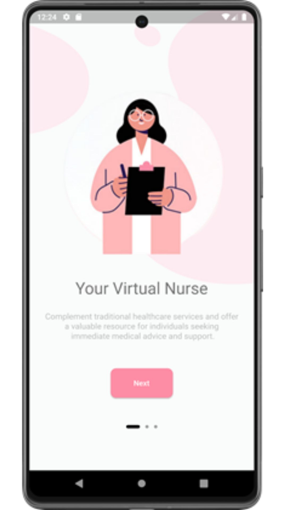
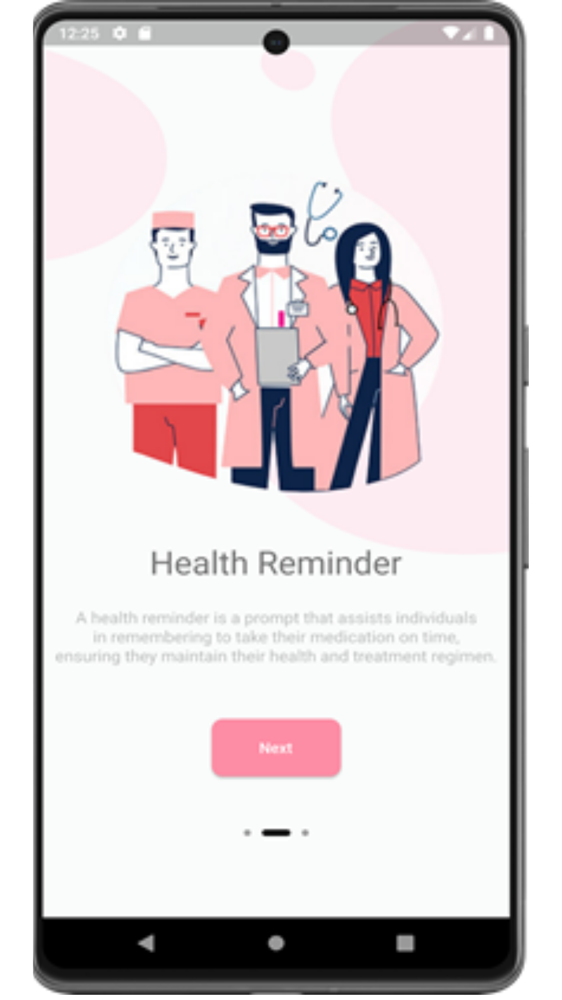
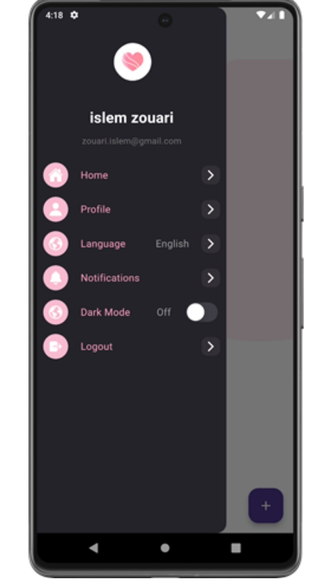
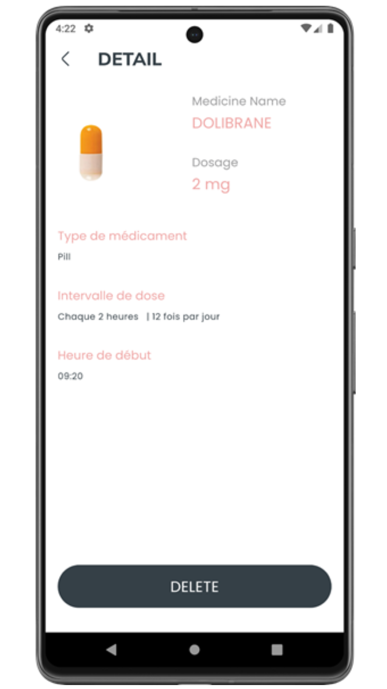
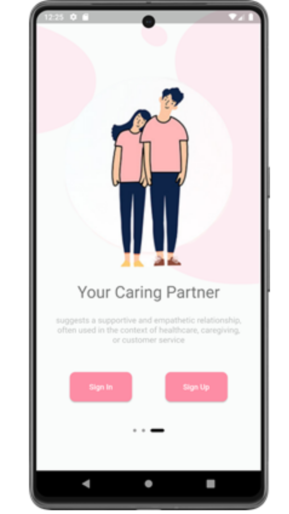
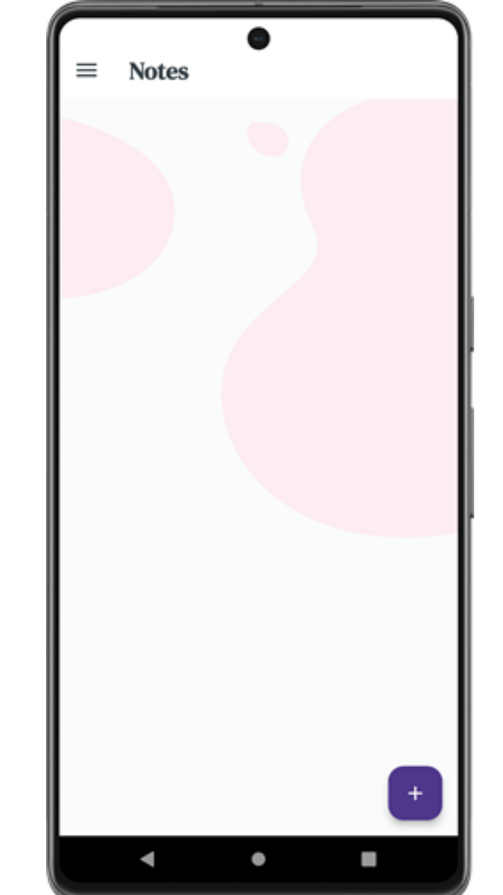

Application de rappel de médicaments
Application mobile permettant de gérer des rappels de médicaments et des notifications personnalisées.
Contexte & objectifs
Le projet a été réalisé pendant le stage chez ZNet-it, avec une attention portée à l’authentification et aux rappels côté mobile.
Fonctionnalités et travaux
- Développement mobile avec Flutter.
- Authentification avec Firebase Authentication.
- Mise en place de notifications personnalisées.
Technologies
Flutter · Firebase Authentication · Notifications
Captures fournies









Statut & précisions
Stage ZNet-it, Sfax, juin à juillet 2023.
POUR ALLER PLUS LOIN
Un projet ou une question ?
Retrouvez l’ensemble des projets ou contactez-moi pour échanger sur les choix techniques et les apprentissages.